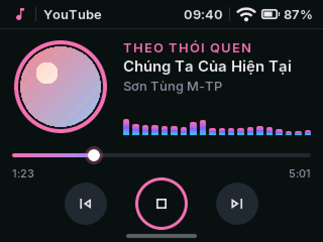
Nhạc theo yêu cầu
Nói tên bài, loa tự tìm trên Zing MP3 hoặc YouTube rồi phát. Có ảnh bìa, sóng nhạc; viên nhạc nhỏ nổi trên mọi màn để điều khiển nhanh.
Trợ lý AI nói tiếng Việt, nhạc theo yêu cầu, đài VOV, khung ảnh, giá vàng, báo thức và lịch âm, trên một màn hình cảm ứng 2,8″. Vỏ tự in ở nhà: để trên bàn, hoặc mang lên ô tô làm HUD dẫn đường.
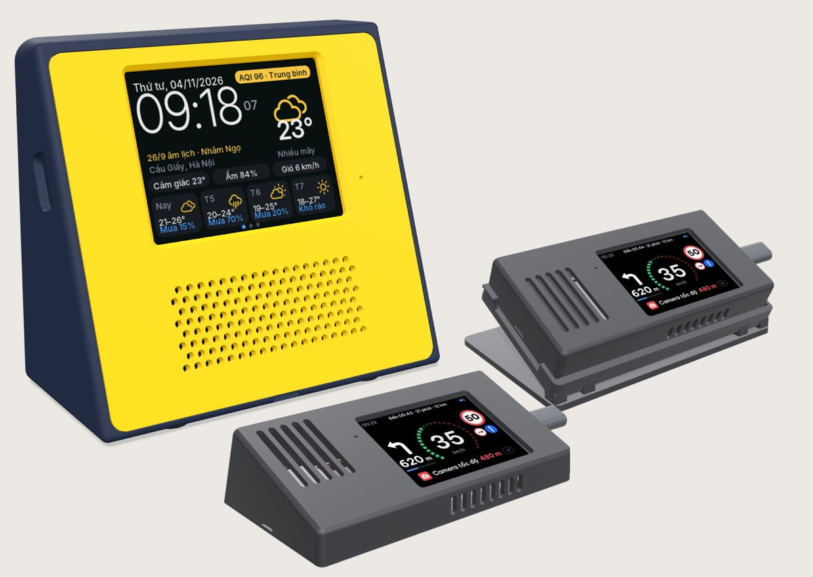
HUD ô tô2 kiểu vỏMột vòng quanh vỏ in 3D, nhìn xuyên vào bên trong, rồi đi qua từng ứng dụng, có tiếng thật của loa.
Để trên bàn, hoặc mang lên ô tô làm HUD trên kính lái. Vỏ nào cũng tự in ở nhà, và xoay thử được mô hình 3D ngay trên trình duyệt.
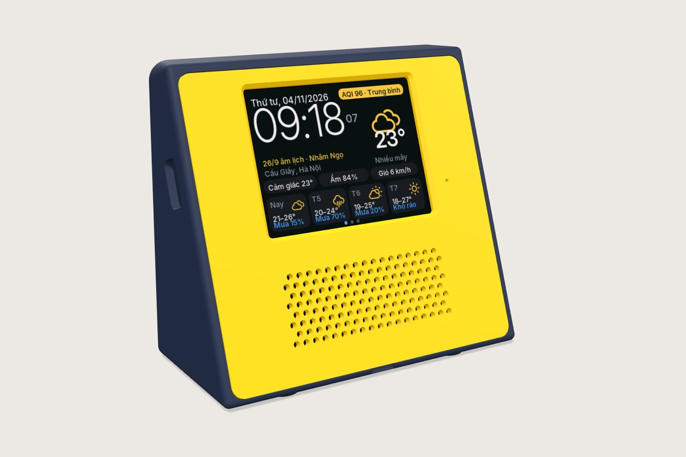
Khối nêm vừa một góc bàn, mặt trước vàng ngả 20°, pin 18650 bên trong.
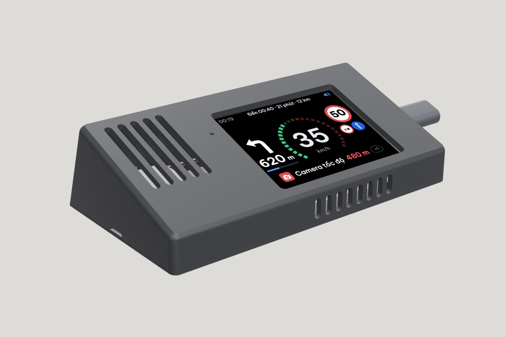
Đặt lên taplo là dùng, hợp kính lái 30–35° của sedan và SUV.
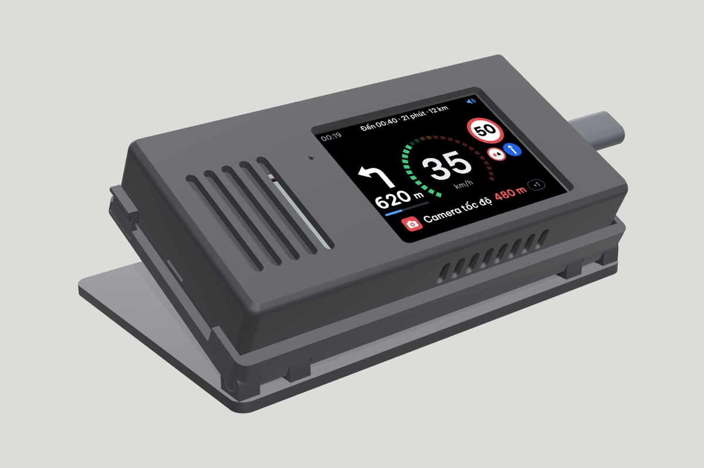
Chỉnh 10–40° cho mọi góc kính. Bản lề in liền, không chốt, không vít.
Vẫn mạch đó, chỉ thay vỏ. Loa nằm trên taplo, hình dẫn đường phản chiếu lên kính ngay trước mắt, không phải cúi xuống nhìn điện thoại.
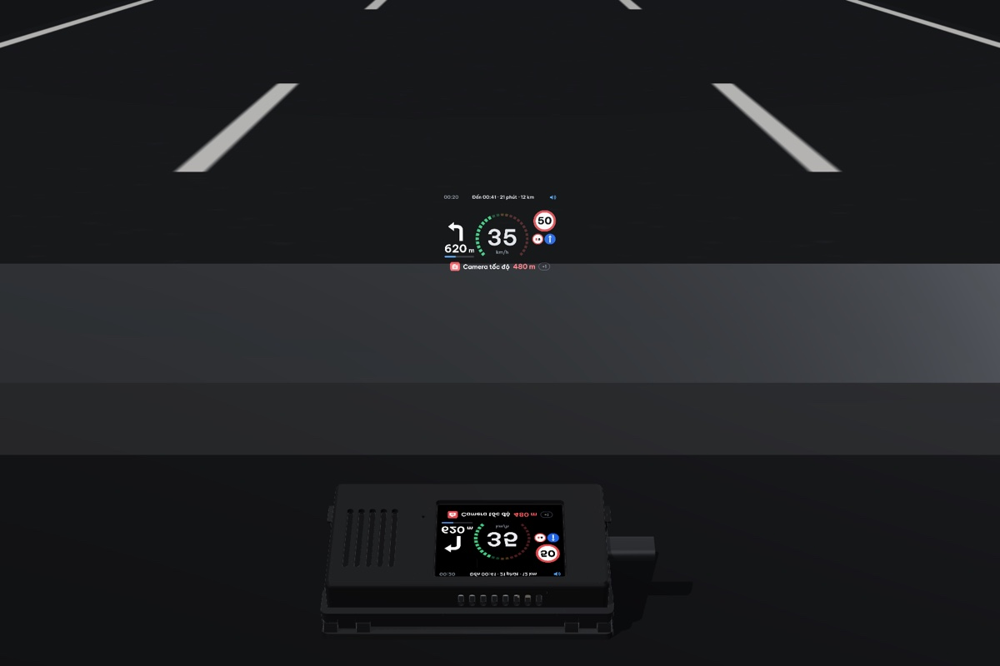
Màn chính có ba trang: đồng hồ và thời tiết, lịch âm, biến động số dư. Vuốt xuống mở bảng điều khiển; vuốt lên mở menu hai trang, vuốt vòng tròn liên tục. Giao diện và giọng đọc có tiếng Việt và tiếng Anh.
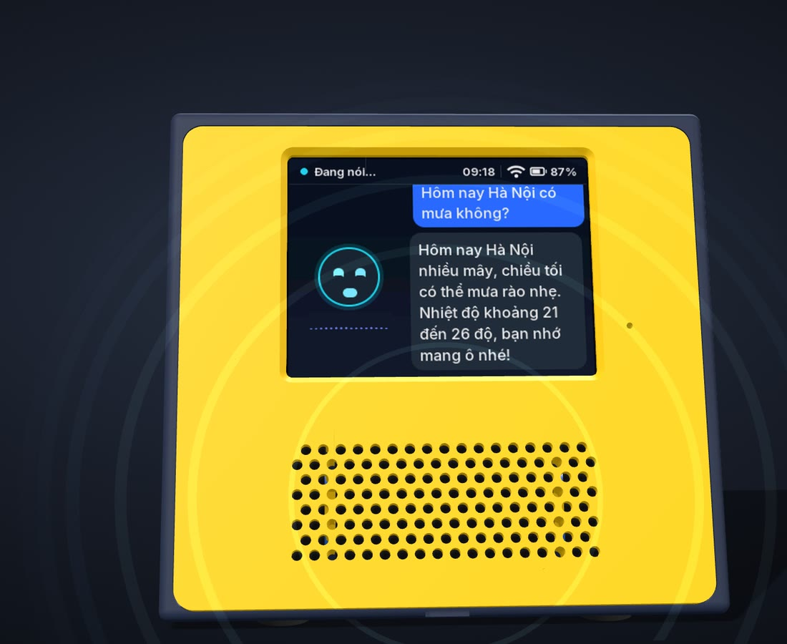
Gọi “Hey Ivy” rồi nói tiếng Việt tự nhiên: hỏi thời tiết, hỏi giá vàng, mở nhạc, mở đài, đặt báo thức, bật Pomodoro. Chữ hiện ngay trên màn, giọng trả lời phát qua loa.

Nói tên bài, loa tự tìm trên Zing MP3 hoặc YouTube rồi phát. Có ảnh bìa, sóng nhạc; viên nhạc nhỏ nổi trên mọi màn để điều khiển nhanh.
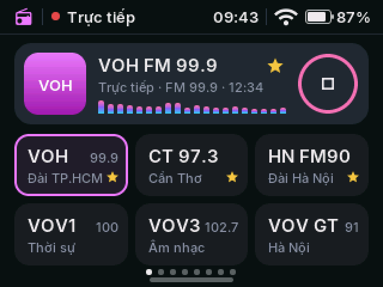
VOV1, VOV2, VOV3, VOV Giao thông Hà Nội và TP.HCM, VOH. Chạm hoặc vuốt để đổi kênh.
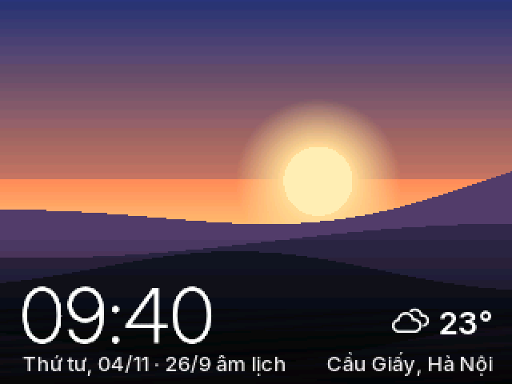
Lúc rảnh, loa chiếu ảnh từ album Google Photos bạn chọn, kèm giờ và thời tiết.
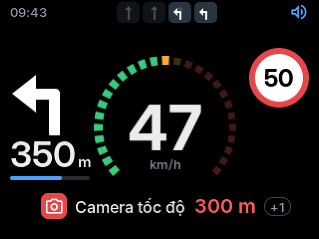
Hướng rẽ, làn đường, tốc độ, biển giới hạn và cảnh báo camera, nhận từ Waze Mod trên điện thoại qua Wi-Fi hoặc Bluetooth. Có vỏ HUD riêng để đặt trên xe.
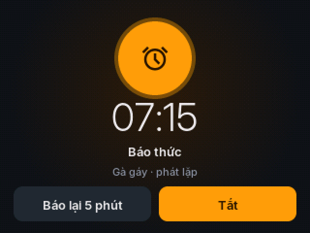
Đặt bằng tay hoặc bằng giọng nói, lặp theo thứ. 10 âm báo có sẵn, từ gà gáy, chim hót tới chuông cổ điển, hoặc nhạc trên thẻ nhớ.
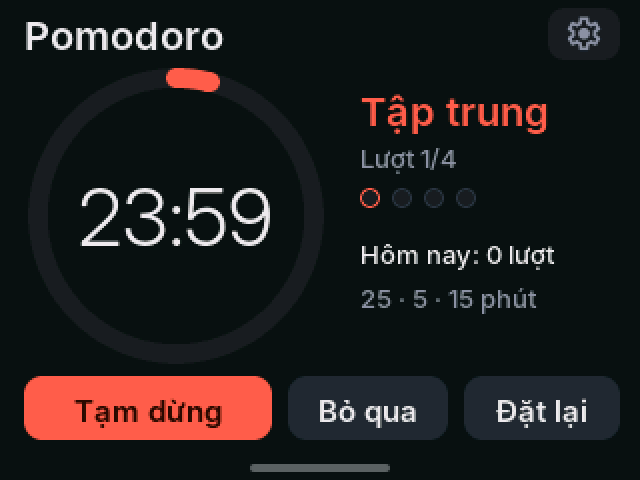
25 phút tập trung, 5 phút nghỉ, nghỉ dài sau 4 lượt; đổi được độ dài. Vẫn chạy khi đóng ứng dụng, hết giờ thì reo và nhắc bằng giọng.
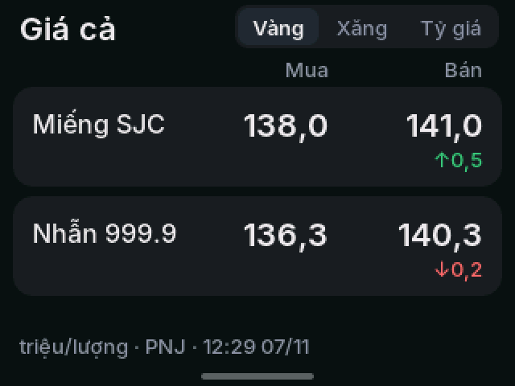
Giá vàng, xăng dầu và tỷ giá ngoại tệ, ba tab trên một màn, tự cập nhật mỗi giờ. Hỏi “giá vàng hôm nay” là loa đọc.
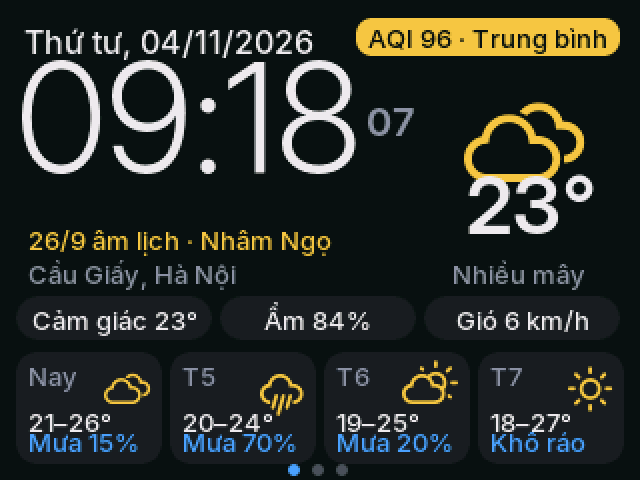
Giờ to, nhiệt độ, độ ẩm, chất lượng không khí và dự báo 4 ngày cho nơi bạn ở.
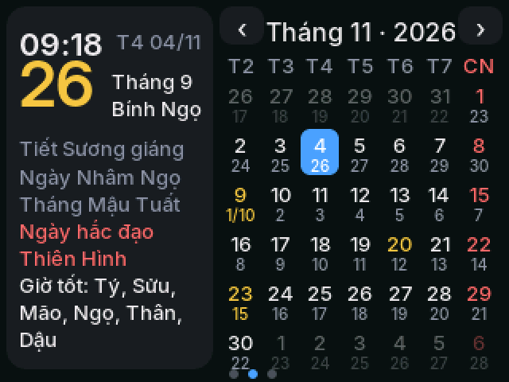
Lịch tháng có ngày âm, tiết khí, ngày hoàng đạo, hắc đạo và giờ tốt trong ngày.
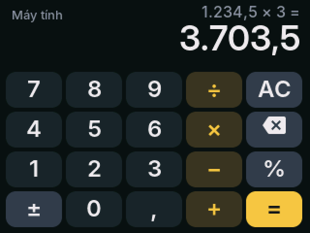
Cộng trừ nhân chia, phần trăm, đổi dấu, phím to dễ bấm. Số viết kiểu Việt Nam: 1.234,5.
Khách mở camera điện thoại quét mã là vào mạng, không phải đọc mật khẩu. Tên mạng và mật khẩu đặt trong trang cài đặt.
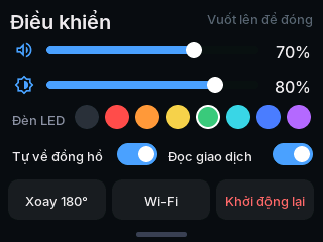
Vuốt từ mép trên xuống ở bất cứ màn nào: âm lượng, độ sáng, màu đèn LED, xoay màn hình 180°.
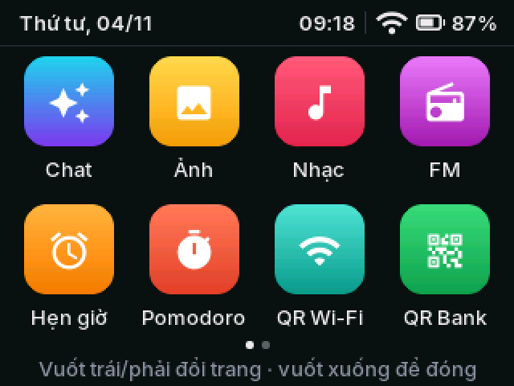
Lưới 4 × 2 kiểu điện thoại, hai trang, vuốt vòng tròn. Vuốt lên trong một ứng dụng là về lại menu.
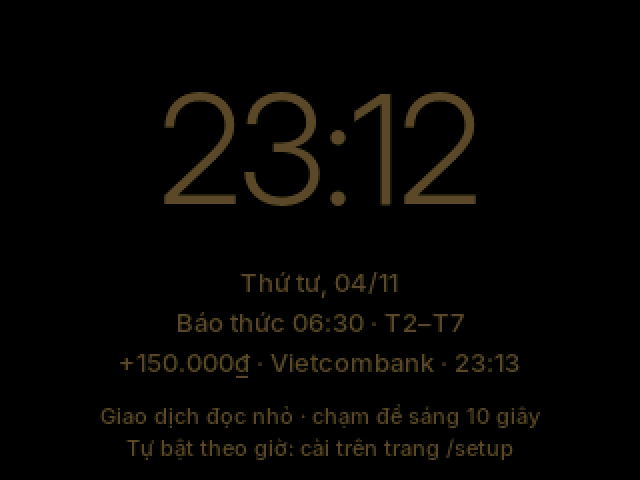
Màn hình tự dịu, chỉ còn đồng hồ to dễ nhìn; thông báo được đọc thật nhỏ. Tự bật theo giờ bạn đặt.
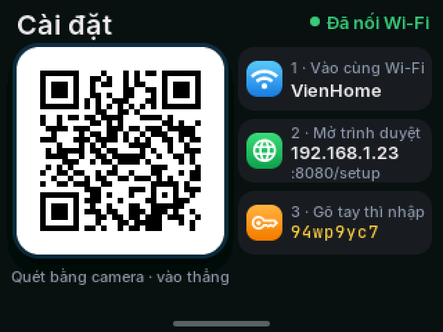
Quét mã trên loa là mở trang cài đặt: Wi-Fi, album ảnh, giờ ban đêm, máy chủ trợ lý, ngôn ngữ. Không cần cài app.
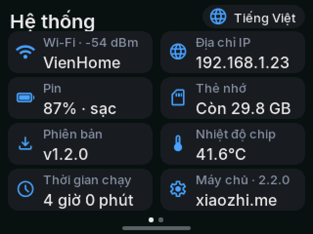
Hai trang: Wi-Fi, pin, thẻ nhớ, nhiệt độ chip; RAM, CPU, flash. Đổi tiếng Việt hoặc tiếng Anh ngay tại đây, có bản phần mềm mới thì loa báo.
Tiền vào là “ting” rồi đọc to số tiền, màn hình hiện người gửi. Tiện cho quầy bán hàng, và chỉ là một trong các ứng dụng của loa.
Mã VietQR hiện trên loa, gõ số tiền ngay trên màn. Lưu được 3 tài khoản, vuốt để đổi.
Đang mở QR thì “Đã nhận” hiện đè lên mã. Nhạc tự nhường, đài tạm dừng rồi phát tiếp.
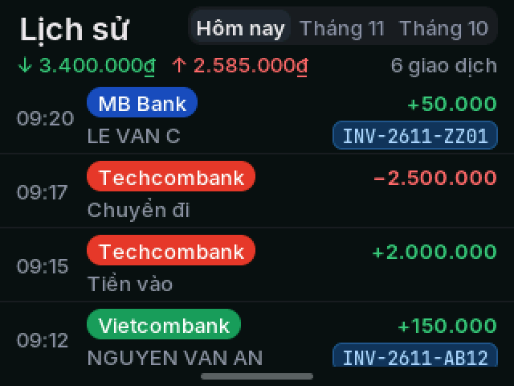
Lưu trên thẻ nhớ, có tổng thu chi. Mất mạng thì có mạng lại loa nhận bù, không sót giao dịch.
Cả ba kiểu vỏ dùng chung một mạch và một firmware.
Không cần lập trình. In vỏ, lắp mạch, nhấp đúp để nạp, rồi cài đặt bằng điện thoại.
Chọn một trong ba kiểu vỏ. Vỏ để bàn in 4 chi tiết từ file 3MF có sẵn: một lần trên máy nhiều màu, hoặc riêng từng màu; cần thêm mạch ES3C28P (kèm loa), một pin 18650 và một công tắc nhỏ.
Cắm mạch vào máy tính bằng USB-C rồi nhấp đúp nap-firmware.command. Cập nhật về sau vẫn giữ Wi-Fi và cài đặt.
Vào Wi-Fi “Xiaozhi-xxxx” của loa để chọn mạng nhà. Sau đó quét mã trên loa để mở trang cài đặt: album ảnh, giờ ban đêm, tài khoản VietQR.
Mặc định là xiaozhi.me. Bạn có thể đổi sang GM Bot hoặc máy chủ của riêng mình trong trang cài đặt của loa.
Được. In riêng từng màu bằng các file STL lẻ: thân và nắp bịt một màu, mặt trước và 2 chốt màu còn lại. Máy có bộ đổi nhựa thì mở file 3MF, màu đã gán sẵn, in cả bộ một lần. Cần bàn in từ 220 × 220 mm.
Có 2 bản: lưng xanh than hoặc lưng đen, cùng mặt trước vàng. File in của hai bản giống nhau; muốn màu nào thì nạp nhựa màu đó. Màu khai báo ở một chỗ trong mã nguồn vỏ, đổi màu khác cũng dễ.
Được, với một trong hai vỏ HUD: nêm 20° cố định, hoặc thân phẳng trên đế chỉnh 5 nấc (xem trang Vỏ in 3D). Loa nhận chỉ đường từ Waze Mod trên điện thoại qua Wi-Fi hoặc Bluetooth; chạm đúp trong ứng dụng Waze HUD để lật hình cho đúng chiều trên kính. Nắng gắt ban ngày thì hình trên kính sẽ mờ, dán thêm phim phản xạ HUD lên kính sẽ rõ hơn. Hai vỏ này mới có bản xem 3D, file in sẽ có sau khi in thử.
Có. Màn hình, giọng đọc của loa và trang cài đặt đều có tiếng Việt và tiếng Anh. Đổi ở màn Hệ thống hoặc trong trang cài đặt, loa khởi động lại là xong.
Không. Mọi cài đặt làm trên trình duyệt điện thoại, qua trang cài đặt của loa. Chỉ phần báo giao dịch cần một app chuyển tiếp thông báo.
Loa không đăng nhập ngân hàng. Điện thoại của bạn vẫn nhận thông báo biến động số dư như thường; một app chuyển tiếp thông báo (có bản Android và iPhone) gửi nội dung đó sang loa, qua mạng Wi-Fi trong nhà hoặc qua máy chủ.
Khi có mạng lại, loa nhận bù các giao dịch còn thiếu và lưu đủ vào lịch sử. Khoản nào cũ hơn 5 phút thì chỉ hiện và lưu, không đọc to, để loa không đọc dồn một loạt.
Loa Ting là một dự án của viennv.dev. Firmware dựa trên Xiaozhi ESP32, một dự án mã nguồn mở, được viết lại giao diện tiếng Việt và thêm nhạc, đài, khung ảnh, Waze HUD, báo thức, lịch âm, giá cả, Pomodoro và báo chuyển khoản.